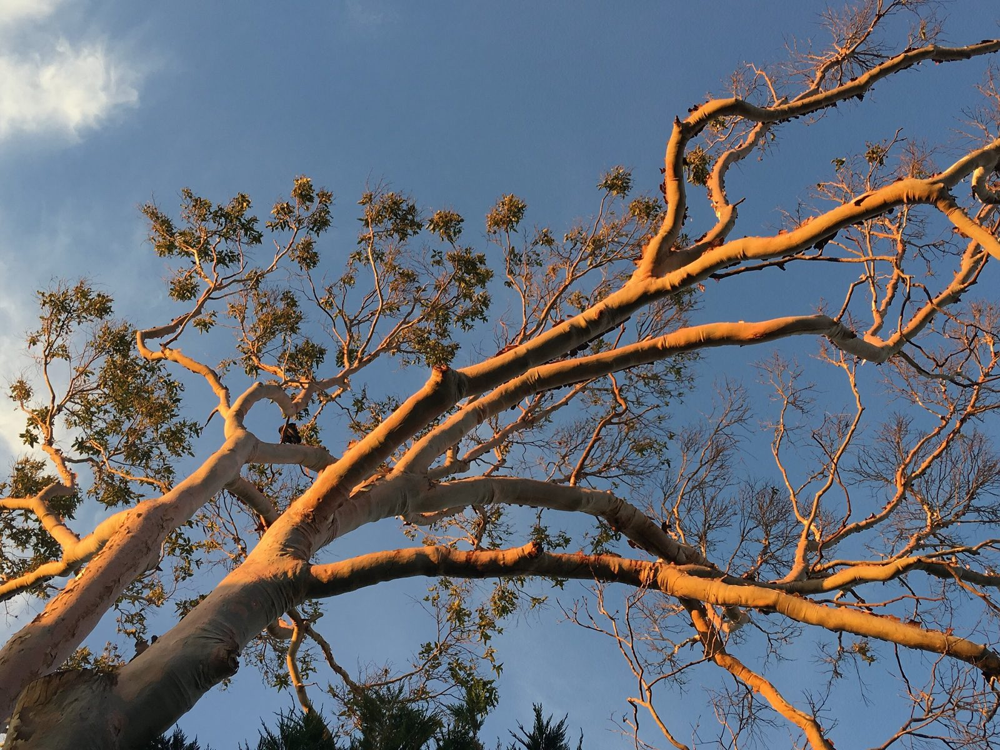

Meditation
Meditation came to me slowly, over years. And then all at once.

As a teenager I had a book called ‘The Calm Technique’ and started sitting. Later came a Buddhist meditation short course. I went through a tai chi phase — qi gong at dawn, a retractable travel sword so I could practise anywhere. As usual I didn’t do things by halves.
But it was Vipassana that landed most deeply and enduringly. My first ten-day silent retreat was in Germany with Panyasara, and I have sat with him every year since. In January 2019 we walked the Buddha trail in India, after which I spent two weeks at Athdalagala, a forest monastery in Sri Lanka where he was originally ordained. That time I stayed as a yogi, a student. But my concentration there was unlike anything I had ever experienced. It felt like I could take my busy mind out of my head and place it on a shelf looking out on expansive, white hillscapes. My mind would just sit there. After an hour, I’d pick it up and put it back.

A year later I returned to the monastery to be ordained as a monk myself. The ceremony took place only a few days after arriving — head shaved, dressed in robes, handed my begging bowl, the ten precepts taken. And that was it. I was a monk. Until I chose to disrobe.
In that forest I shed some fundamental fears. I had always been afraid of not having enough to eat. I worried about not getting a good night’s sleep. Monks stop eating at noon. This was incredibly difficult for me at first, but quite quickly I adapted, and now I have a completely different relationship to food — more flexible, less obsessed. Sleeping had its own challenges — a wafer-thin mattress, the sounds of elephants outside, the darkness of the forest.

But what shocked me was the music. Three or four nights a week the local village would have a wedding or party with wild doof doof live music that went on until four in the morning, more or less when the monastery day begins. Initially I reacted with fury. I didn’t come all the way to Sri Lanka to be harassed by music of all things! Night after night I was given this puzzle. By the end of my stay, if I heard the soundcheck gearing up after dinner, my reaction had become: oh nice, a music night. I’d prepare my book, my tea, and settle into a peacefully sleepless evening, carried along by beats that had become all but inaudible.
When I disrobed one hundred days later — it is common in this tradition to ordain for only a year or even a few days, unlike the lifelong Christian approach to ordination — I left behind my begging bowl, my robes and prayer mat, my monk brothers and their unentangled intimacy, the forest with all its seething life. I took with me an ethic that helps me on the path: a dedication to choosing lightness over weight, to choosing kindness over self-interest, to choosing less over more.

Meditation is something I don’t understand, don’t believe, and about which I have no doubt whatsoever.
I don’t consider myself a meditation teacher, but I am passionate about sitting with others. Join me in a group sitting, somewhere, sometime.
More about Vipassana meditation.

Audio Series
Over the years I have made several audio series drawing on meditation, Alexander Technique and art — short practices for listening to at home, in your own time.
